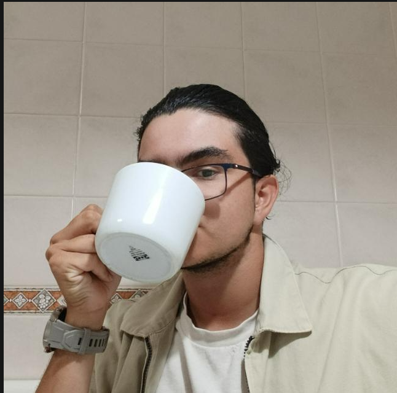

Hola, soy Oscar,
Hola, soy Oscar, Estudiante de Desarrollo de aplicaciones web . me apasiona todo el mundo de la programación, y este es mi portafolio. Para seguir avanzando necesito que encuentres las llaves de cada sala
Trabajos
Prácticas de 100 horas en Axis Data
Durante mis prácticas en Axis Data trabajé principalmente desarrollando APIs utilizando Spring Boot. Aprendí a crear y gestionar endpoints, manejar bases de datos y asegurar la comunicación entre aplicaciones. Esta experiencia me permitió consolidar mis habilidades en backend y comprender mejor el desarrollo de aplicaciones empresariales.
Proyectos
Sobre mí
Soy Oscar, estudiante de Desarrollo de Aplicaciones Web. Me apasiona especialmente el back-end, aunque puedo trabajar sin problemas en front-end cuando es necesario.
Habilidades y Tecnologías
- Lenguajes: JavaScript, Java, SQL
- Frameworks y librerías: Spring Boot, Bootstrap
- Base de datos y conectividad: JDBC
- Otros: Desarrollo full-stack, creación de APIs, integración front-back
Si quieres contactar conmigo por favor, hazlo desde:
- ovallsmoreno@gmail.com
- 656344987
- CV html